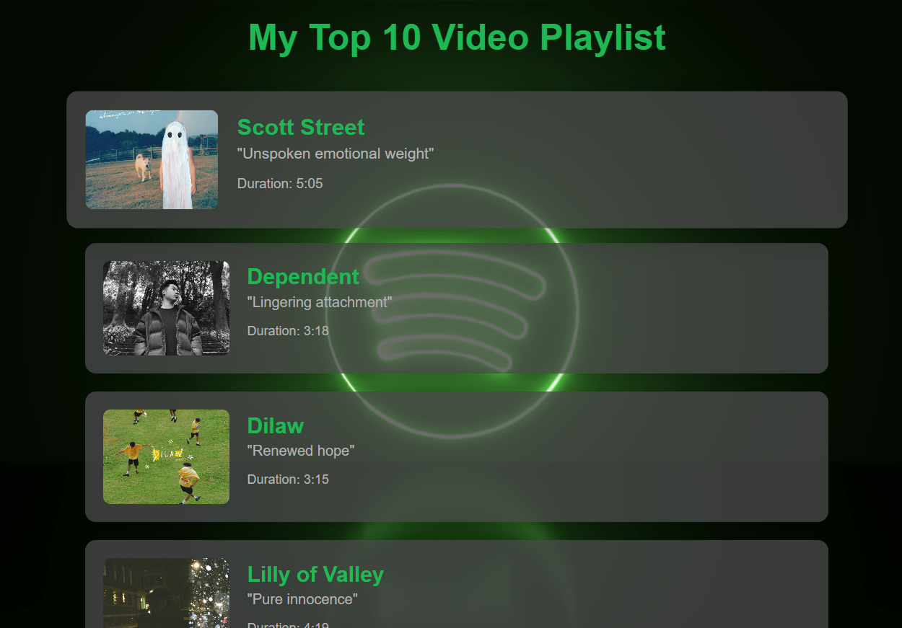
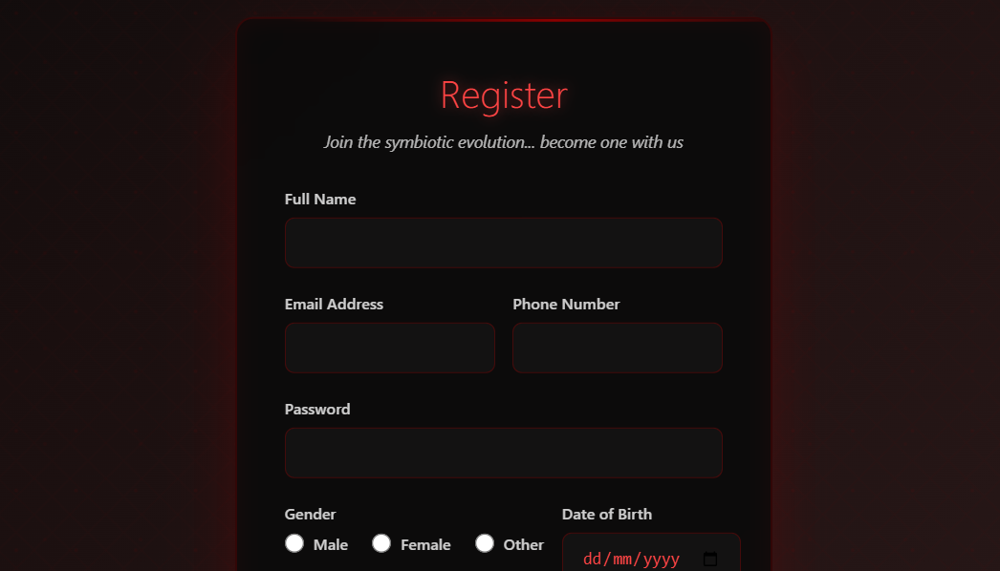
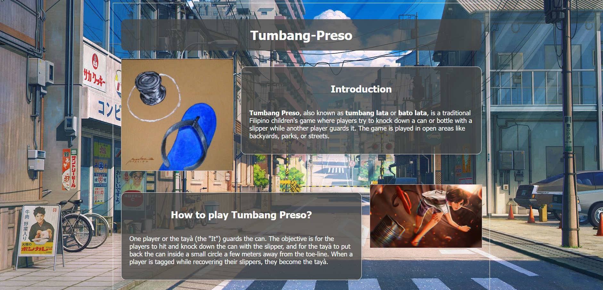

Top 10 Playlist
A clean and stylish playlist layout built using only HTML and CSS. It showcases a ranked list of top 10 songs with custom styling, responsive design, and smooth hover effects.
Click to View


Parasyte Register Form
A themed registration form inspired by Parasyte: The Maxim, designed with a dark sci-fi aesthetic. It features a smooth user experience for account creation, integrating stylish visuals and interactive form elements.
Click to View

Tumbang Preso
A creative twist on the classic Filipino game Tumbang Preso, reimagined with an anime-inspired design. The website features vibrant visuals, character-driven layouts, and engaging content that blends cultural tradition with modern anime aesthetics.
Click to View